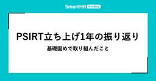
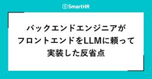

SmartHR Tech Blog
https://tech.smarthr.jp/
SmartHR 開発者ブログ
フィード

PSIRT立ち上げ1年の振り返り —— 基礎固めで取り組んだこと 2
2
SmartHR Tech Blog
こんにちは。テクノロジーマネジメント本部でプロダクトセキュリティエンジニアをしているsasakki-です。 2025年1月にプロダクト全体のセキュリティ向上に責任を持つPSIRT（Product Security Incident Response Team）を立ち上げてから、1年が経過しました。 立ち上げ当初のPSIRT立ち上げ時の取り組みを紹介した記事では、プロダクトセキュリティを組織的に強化するための仕組みづくりとして、To-Be / As-Is の整理やプロダクトセキュリティガイドラインの整備、横断的な支援体制の構築に取り組んでいくことをご紹介しました。 本記事では、その1年後の現在地…
2日前

バックエンドエンジニアがフロントエンドをLLMに頼って実装した反省点 55
SmartHR Tech Blog
SmartHRでプロダクトエンジニアをしている大澤と申します。この記事では、バックエンドエンジニアである自分がフロントエンドのコードをLLMに頼って実装した際の反省点について紹介します。 現在、LLMはだいぶ良い感じのコードを書いてくれるようになってきています。Claude Opus 4.6が生成したRubyのコードはあまり手直しの必要を感じません。日々驚いています。 ですが、それは自分がRubyとRuby on Railsの知識があるからです。 私はTypeScriptとReactについてあまり詳しくありません。SmartHRでは頼もしすぎるフロントエンドが強い同僚の方々に助けられてコードを…
3日前

「EMConf JP 2026非公式懇親会」を開催します！
SmartHR Tech Blog
EMConf JP 2026非公式懇親会 EMConf JP 2026 後に、カジュアルに交流できる場を用意しました！ 公式懇親会のチケットが早々に完売してしまったと伺い、微力ながら、私たちも力になりたいと思い企画しました！（公式運営の皆さまにも快諾いただいています） 詳細は以下です: 日時: 2026年3月04日(水) 18:45〜 場所: ニルワナム 有明店（Nirvanam） 様 会場から徒歩1分、貸切予定です 20名以上の参加で貸切となります 参加費: 無料です 申し込み: イベントページ 補足: 本イベントは、EMConf JP 2026にシルバースポンサー兼ランチスポンサーとして協…
5日前

NGK2026S（名古屋合同懇親会）にスポンサー・運営スタッフとして参加しました！
SmartHR Tech Blog
こんにちは。プロダクトエンジニアのsoul( @ex_SOUL ) です。 2026/01/24(土) に名古屋で開催された合同懇親会 NGK2026S にスポンサー・運営スタッフとして参加しましたので、その様子をお伝えします。 目次 目次 NGK2026S とは イベント概要 イベントレポート 昼の部(LT会) 夜の部(懇親会) 感想 We Are Hiring! NGK2026S とは NGK2026S は、名古屋のエンジニアコミュニティが主催する合同懇親会です。 昼の部・夜の部と分かれており、昼の部はLT大会・夜の部は懇親会という形式で開催されています。 NGKは「名古屋合同懇親会（Na…
8日前
Rails Girls Tokyo 18th に、コーチ/スポンサーとして参加しました！
SmartHR Tech Blog
こんにちは。CREユニットの16bit_idolです。 2026年2月13日から14日にあった「Rails Girls Tokyo 18th」にコーチとして参加しスポンサーLTをしてきました！ この記事では、イベントの模様についてレポートします。 集合写真 Rails Girls とは Rails Girls は、2010年にフィンランドで始まった、非営利のボランティアコミュニティです。 「女性が自分のアイデアを形にできるツールとコミュニティを提供する」ことを目的に、世界中で開催されています。 高校生、社会人、主婦……と様々な女性が参加し、RubyやRailsといったプログラミング言語について…
9日前
雑談の場づくり —— リモート環境のスクラムにおける年末調整チームの取り組み
SmartHR Tech Blog
皆さんこんにちは。年末調整チームのyanodaiです！ 日々リモートワークで働いていると、ふとこんなことを思いませんか。 「あの人とは毎日働いているけれど、仕事以外の話をしたことがないな」 Slackでは毎日やり取りしているのに、その人が左利きか右利きかも知らない。 ちなみに僕は左利きです。……これはただ言ってみたかっただけです。 雑談は一見すると生産性とは関係がないようにも思えます。 しかし、もしかするとスクラムを支える土台になっているのかもしれません。 この記事では、リモート環境でスクラムを実践する中で感じた雑談の役割と、年末調整チームで実際に行っている取り組みを紹介します。 リモート環境…
10日前
SmartHRは福岡Rubyist会議05に協賛し、ブースを出展します！
SmartHR Tech Blog
プロダクトエンジニアの @udzura です。SmartHRは、2026年2月28日（土）に開催される「福岡Rubyist会議05」に協賛します。 いよいよ今週末の開催となりました！チケットは絶賛販売中のようですので、ご興味のある方はぜひ参加登録をお願いします！ regional.rubykaigi.org スポンサートークでの登壇 SmartHRのスポンサートークで、 @udzura が登壇します。 スポンサートーク『したっけ、RubyKaigiでもSmartHRをよろしくね〜！』 登壇者：近藤うちお (@udzura) 時間帯：15:15-15:25 2026年のRubyKaigiですが、…
11日前
その関数、モックにしますか？ —— オーナーシップの境界と古典学派・ロンドン学派の視点から考えるユニットテストの方針
SmartHR Tech Blog
こんにちは。SmartHRプロダクトエンジニアをしているdelhi09です。私が所属するチームは「基本機能」と呼ばれるSmartHR最大のRailsアプリケーションに携わっています。 SmartHRには「従業員情報更新申請」という従業員情報の更新を申請する機能が存在します。例えば結婚による姓の変更や引っ越しによる通勤経路の変更が代表的なユースケースです。先日、「従業員情報更新申請」の適用日に申請当日よりも未来の日付を設定できる機能がリリースされました。 support.smarthr.jp 本リリースにより、来月に引っ越すことが決まっている場合に事前に通勤経路の変更申請を提出しておくといったこ…
12日前
チームの自律的な成長を目指して、チーム目標を「To Do」から「To Be」へ見直した話
SmartHR Tech Blog
こんにちは、SmartHRでアジャイルコーチをしている @wassan です。 「目標に書いた機能は全部リリースした。でも、思ったほどユーザーに使われていない。」 プロダクト開発に携わったことのある方なら、一度はこんな経験をしたことがあるのではないでしょうか。SmartHRでも、組織が急速に拡大する中で同じ壁にぶつかりました。 この記事では、その壁をどう乗り越えようとしたか——チーム目標を「To Do（やるべきこと）」から「To Be（ありたい姿）」へ転換する取り組みについて、背景と学びを紹介します。 後半では、実際にパイロットチームとしてワークショップを実践した開発チームのチーフ nomus…
15日前
本を書くハッカソンイベントBookathonレポート —— 週末だけで13冊が完成！
SmartHR Tech Blog
SmartHRは、2026年2月6日（金）から8日（日）にかけて東京・メルカリ 六本木オフィスで行われた「Bookathon - 本を書くハッカソンイベント」におやつスポンサーとして協賛しました。 本レポートでは、その模様をお届けします。 目次 目次 Bookathon - 本を書くハッカソンイベントとは Day 1 —— キックオフ、チーム編成、環境構築 Day 2 —— 執筆、編集者アドバイス Day 3 —— 執筆、発表会、表彰式、懇親会 最後の追い込み 発表会 審査 表彰式 懇親会 アフターイベント：Technical Writing Meetup vol.48 —— 「Bookath…
17日前
dnd-kit を使う際に意識したい、アクセシビリティの 3 つの注意点
SmartHR Tech Blog
はじめに こんにちは。アクセシビリティエンジニアの tajiman です。 先日、プロダクトエンジニアの morisy さんが「React Hook Form と dnd-kit を使った並び替え可能なフォームの開発」という実践的な記事を公開しました。 dnd-kit は高機能で自由度が高いライブラリですが、さらにアクセシビリティの観点を取り入れることで、より「誰もが使いやすい」状態へと進化させることができます。 本記事では、先日の記事で紹介された実装をベースに、アクセシビリティの品質を向上させるための 3 つのポイントを紹介します。 また、今回紹介する dnd-kit は以下のバージョンで動…
18日前
ライブラリ更新から始まるOSS貢献 —— AIで下がった貢献ハードル
SmartHR Tech Blog
こんにちは、プロダクトエンジニアのa2cです！本記事では、日常のライブラリ更新作業の延長線上で、自然にOSS（Open Source Software）へ貢献する機会が生まれた経験について紹介します。 具体的には、テストデータ生成ライブラリである Faker の日本語 locale にデータを追加し、Pull Request を出すまでに考えていたことや判断基準を共有します。 「OSS貢献に興味はあるけれど、なかなか最初の一歩が踏み出せない」という方に少しでも参考になれば嬉しいです！ 本題に入る前に、今回扱ったFakerについて簡単に紹介します。 Faker とは Faker はテストデータ生…
20日前
SRE Kaigi 2026 参加レポート —— 登壇、ブース出展、そしてSREとエンジニアの人数比調査の結果は！？
SmartHR Tech Blog
こんにちは。SREチームなどのマネジメントをしている @sugamasao(id:seiunsky) です。 2026年1月31日に、東京都中野区の中野セントラルパーク カンファレンスで開催された「SRE Kaigi 2026」にゴールドスポンサーとして参加しました。本記事では、SmartHRからの登壇やブース出展の様子を中心に、イベントをレポートします。 SRE Kaigi 2026とは SRE Kaigi 2026は、Site Reliability Engineering（SRE）の知見の共有と参加者との交流を楽しむ技術カンファレンスです。 2026.srekaigi.net Smart…
22日前
AIコーディング時代のレビュー負荷を可視化したい！ —— GASとGitHub APIで「誰がどのくらいレビューしたか」をSlackに通知する仕組み
SmartHR Tech Blog
こんにちは。SmartHRでプロダクトエンジニアをしているmatsugenです。 昨今、開発におけるAI活用が随分と進み、開発速度の向上を日々実感しています。一方で、開発速度が上がると Pull Request（以下 PR）の数も増えます。そうなると、レビューの負荷も増大します。 私が所属するチームでは、レビューの負荷を可視化する目的で、スプリント終了時にメンバーごとのレビュー件数がSlackに通知されるようになっています。この記事では、その仕組みをつくるに至った背景と実装のポイントを紹介します。 次から次へとやってくるレビュー依頼 私のチームでは、1週間単位のスプリントで開発を進めています。…
25日前
SREチームのメンバーへの取材記事がFindy Toolsで公開されました
SmartHR Tech Blog
『SmartHRが挑む30チームへのオブザーバビリティ民主化｜New Relicを「全員で意思決定する」ツールに。』と題したSREチームのメンバーへの取材記事がFindy Toolsで公開されました。 findy-tools.io
1ヶ月前
CRE Camp #4 が 開催されました！
SmartHR Tech Blog
こんにちは、SmartHR CREユニットの16bit_idolです。私たちは「基本機能」と呼ばれる基幹プロダクトのCREとして、問い合わせ一次対応やインシデント対応、プロダクト改善などを担当しています。 2月からはCREユニットも人数が増えたこともあり、RevOpsにも力を入れていきたいと考えています。 もしよろしければ、下記ブログでRevOpsについて書いていますので、ご一読ください！ tech.smarthr.jp この記事では、2026/01/21(水)にはてな東京オフィスで開催された「CRE Camp #4 ユーザー信頼性を支える現場の知見LT大会」の模様をお届けします！ これまでの…
1ヶ月前
SmartHR最大のRailsアプリケーションにおけるPumaスレッド数を見直しました
SmartHR Tech Blog
こんにちは、SmartHR プロダクトエンジニアのB6です。 「基本機能」と呼ばれるSmartHR最大のRailsアプリケーションでは、アプリケーションサーバにPumaを使用しています。 RailsでPumaデフォルトスレッド数が変更されたのをきっかけに、私たちもスレッド数の設定を見直してみたいと思うようになりました。 本記事では、調整の際に行ったこととその結果について共有いたします。 背景 2024年、RailsでPumaのデフォルトスレッド数を減らすための議論が展開されました（Issue #50450）。議論の結果、I/O比率を25~50%とする一般的なRailsアプリケーションでは、スレ…
1ヶ月前
中高生Rubyプログラミングコンテスト2025レポート —— SmartHR賞は「おなかいっぱいのRaspberry Pi」
SmartHR Tech Blog
SmartHRは、「中高生Rubyプログラミングコンテスト2025」にPlatinumスポンサーとして協賛しました。 本レポートでは、2025年11月29日（土）に東京・三鷹産業プラザで行われた最終審査会の模様をお届けします。 中高生Rubyプログラミングコンテスト2025とは 中高生Rubyプログラミングコンテストは、「子どもたちがプログラミングを学び、自分でコンピューターを動かしたときの感動やつくった作品を発表する経験を通して、新しい世界への興味や関心を呼び起こし、将来への夢をはぐくむことを目的」に開催されています。今回で15回目の開催でした。 SmartHRは、今回が初協賛です。 応募者…
1ヶ月前
外部サービス連携基盤の現在地 —— プロダクト間の「滑らかな連携」実現に向けて
SmartHR Tech Blog
近年のSaaS業界では、マルチプロダクト戦略をとる企業が一層増えています。複数のプロダクトを展開することは大きなシナジーを生む一方で、プロダクト間のデータ連携は難易度の高い課題でもあります。 SmartHRにおいても、労務管理からタレントマネジメントへと領域を広げ成長を続ける中で、拡張性に耐えうるプロダクト間連携の仕組みをその都度構築し、磨き込んできました。給与計算、勤怠管理、年末調整など、それぞれ独立したプロダクトが連携し合うことで、単体では実現できない業務体験を提供することを目指しています。 そして、私が所属しているプロダクト基盤開発部の外部サービス連携基盤ユニットでは、こうしたマルチプロ…
1ヶ月前
SREチームへの取材記事がNew Relicのサイトに掲載されました
SmartHR Tech Blog
「サービスレベル目標（SLO）の全社展開により、エンジニア200名組織のSREプラクティスを4名で推進」と題したSREチームへの取材記事がNew Relicのサイトに掲載されました。 newrelic.com
1ヶ月前
SmartHRはSRE Kaigi 2026に全力です —— 登壇者2名！ ブースでSREの人数比調査！ 新作アクキーもお披露目！
SmartHR Tech Blog
SmartHRは、2026年1月31日（土）に開催される「SRE Kaigi 2026」にゴールドスポンサーとして協賛します。 いよいよ開催が数日後に迫ってきましたので、改めて当日の登壇セッションとブース出展についてお知らせします！ 2026.srekaigi.net 登壇セッション SmartHRからは、2名のSREメンバーが登壇します。 お二人からのコメントをお読みください。 小さく始めるBCP ― 多プロダクト環境で始める最初の一歩 登壇者：中間 啓介 (@kekke_n) 日時：13:35 - 14:05 会場：Room A SmartHRのSREユニット所属の中間 啓介（なかま けい…
1ヶ月前
React Hook Formとdnd kitを使った並び替え可能なフォームの開発
SmartHR Tech Blog
こんにちは、SmartHRのプロダクトエンジニアのmorisyです。現在開発中のプロダクトでReact Hook Formで作ったフォームの入力項目をドラッグ＆ドロップで並び替えるというUIを実装しました。 並び替えの実装にはdnd kitというライブラリを使用しました。今回はReact Hook Formとdnd kitを組み合わせて、入力項目をドラッグ＆ドロップできるフォームの実装について解説します。実装時にぶつかった課題とその解決方法についても紹介します。 利用するライブラリ 今回の実装では、React Hook Formとdnd kitという2つのライブラリを使用します。 React …
1ヶ月前
プロダクトエンジニアと肩を並べて品質をデザインする｡入社3ヶ月で実践した､開発プロセスから変えるQAの形
SmartHR Tech Blog
SmartHRにQAエンジニア(以降、QAEと表記)として入社して3ヶ月が経ちました。 振り返れば、『とにかく、小さくても何か貢献しなくては！』と必死になっている間に過ぎていった3ヶ月だったと感じます。 この記事では、「開発チームにおけるQAEが何をするべきなのか」と自分なりの役割を模索しながら取り組んできたことや、 その背景にあるSmartHRの文化・雰囲気についてご紹介できればと思います。 配属先はQAEが一人も居ない開発チーム 入社して早々に任されたのは、QAEが一人もいない開発チームでした。 そもそも設立半年の新しいチームで、QAEが居ないどころか、QAEが過去に在籍した実績もありませ…
1ヶ月前
複雑な要件を1クエリで完結させる、PostgreSQL活用術
SmartHR Tech Blog
こんにちは、SmartHR のプロダクトエンジニアの横山です！ 今日は、とあるプロダクト開発で実装した巨大な SQL において、一般的な構文（UNIONやJOINなど）の影に隠れがちですが、とても助けになった PostgreSQL の機能を紹介します。 巨大な SQL と聞くと、複雑性や可読性の観点から敬遠されることも多いです。しかし、パフォーマンス要件的に必要に迫られたり、アプリケーション層の複雑さを解消するために、あえて DB 側でロジックを解決し、1 クエリで完結させる選択が必要な場面も、稀にですが確実に存在します。 本記事では、実際のプロダクトコードで活用したテクニックの中から、痒いと…
1ヶ月前
第14回SmartHR LT大会 兼 忘年会レポート —— 忘年！ 忘年！ 忘年！
SmartHR Tech Blog
こんにちは。ESP・情シス開発本部の@ydahです。 この記事では、2025 年 12 月 19 日に開催した第 14 回 SmartHR LT 大会の模様を、a-know さん、Tacto さんと共にお届けします。 今回は、年末の恒例行事である忘年会も兼ねての開催となりました。発表内容もさまざまで、笑いあり、学びありの楽しい LT 大会となりましたので、その様子をレポートします！ LT大会開会の様子 SmartHR LT 大会とは SmartHR LT 大会は、有志のプロダクトエンジニアが DevRel とともに隔月で企画・運営している社内イベントです。プロダクトエンジニアの中から 11 名…
1ヶ月前
こんなフィーチャーフラグはイヤだ —— アンチパターンから考える消しやすいフィーチャーフラグの使い方
SmartHR Tech Blog
こんにちは！SmartHR で勤怠管理機能の開発をしている @yoiwamoto です。 フィーチャーフラグ、便利ですよね。一番好きなラグです。 フィーチャーフラグというのは、DevOps などの文脈で用いられるプラクティスの一つで、機能の有効・無効を制御する仕組みです。 一般的にはデプロイメントとリリースを切り離すことや、トランクベース開発を可能にすることに目的が置かれています。 勤怠管理機能の開発チームでは、フィーチャーフラグを利用した開発を行っており、一定規模以上の機能はフィーチャーフラグでユーザーが利用できないように制御しながら、機能内の個別の開発アイテムを main ブランチにこまめ…
1ヶ月前
Rubyリリース30周年パーティー参加レポート
SmartHR Tech Blog
こんにちは。プロダクト基盤開発本部の@ydahです。 2025年12月20日に、東京都港区のアンドパッドで開催された「Rubyリリース30周年パーティー」に参加しました。本記事では、イベントの様子についてレポートします。 Rubyリリース30周年パーティーとは Rubyリリース30周年パーティーは、Ruby 4.0のリリースを記念し、Ruby 0.95が1995年12月21日にリリースされてから30年を祝うイベントです。 Rubyの生みの親である、まつもとゆきひろさん（@matz）による基調講演をはじめ、歴代のRubyのリリースマネージャーによるパネルディスカッション、コミュニティメンバーによ…
2ヶ月前
Regional Scrum Gathering Tokyo 2026 レポート —— ブース出展、スポンサーセッション登壇
SmartHR Tech Blog
SmartHRは、2026年1月7日から9日に東京のベルサール羽田空港で開催された「Regional Scrum Gathering Tokyo 2026」（以下、RSGT2026）にシルバースポンサーとして協賛し、3名が参加し、うち1名がスポンサーセッションで登壇し、初めてブースも出展しました。 RSGT2026とは RSGT2026は、アジャイル・スクラムの実践者が集まる国内最大級のイベントです。 実践者が多いため、活気・熱気に溢れており、現地でしか味わえない体験がそこにはあります。 2026.scrumgatheringtokyo.org スポンサーセッションの登壇 スポンサーセッション…
2ヶ月前
北陸Ruby会議01レポート —— みんなとわたしたちのRubyの使い方
SmartHR Tech Blog
2025年12月6日(土)に石川県立図書館で開催された「北陸Ruby会議01」に、SmartHRから@ydahと@pndcatが登壇しました！ この記事では、イベントの模様と登壇内容についてレポートします。 会場の石川県立図書館 北陸Ruby会議01とは 北陸Ruby会議01のテーマは、「みんなの Ruby の使い方」でした。 発表者・参加者のいろいろな Ruby の使い方の事例を紹介しあうことで、北陸における Ruby の活用の幅を広げ、Ruby を利活用する人口を増やしたいという思いで開催されました。 発表内容としては Ruby を使って作ったものや企業での Ruby の利用事例など、幅広…
2ヶ月前
権限基盤の活動を紹介します！ —— これまでの振り返りとこれからの挑戦
SmartHR Tech Blog
こんにちは、プロダクト基盤の権限基盤ユニットでPdEをしているhotakaです。 本記事では、2024年から2025年にかけて権限基盤ユニットでは何をしてきたか、2026年からは何をしていくのか、をお話していきます。 2024年〜2025年の振り返り ここでは、自分が入社した2024年5月以降の権限基盤ユニットについて、かんたんに振り返っていきます。 年 月 トピック 2024年 6月 従業員項目の連携機能をリリース 11月 ロール機能をリリース 2025年 6月 ロールの役職制限機能をリリース 7月 ロールの閲覧できる従業員項目機能をリリース アーキテクチャチームの誕生 10月 アカウント権…
2ヶ月前